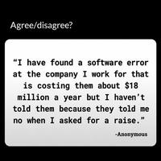

An anonymous reader quotes a report from the Quantum Insider: The Trump administration is preparing a new round of industrial policy aimed at quantum computing, with roughly $2 billion in grants expected to go to nine companies developing quantum hardware and related technologies. According to Reuters, citing a Wall Street Journal report, the U.S. Department of Commerce plans to distribute the funding through deals that also give the federal government equity stakes in the companies receiving the awards. The approach would expand Washington's increasingly direct involvement in sectors viewed as strategically important to national security, advanced manufacturing and competition with China.
Reuters reported that IBM is expected to receive the largest share of the package at about $1 billion. Semiconductor manufacturer GlobalFoundries is slated to receive approximately $375 million, according to the report. Other recipients are expected to include D-Wave Quantum, Rigetti Computing, Quantinuum and Infleqtion, with each company potentially receiving around $100 million, Reuters reported. Australian quantum startup Diraq could receive about $38 million, according to the Wall Street Journal report cited by Reuters. Fast Company notes in its reporting that IBM will invest the funds it receives into a new IBM company called Anderon. It will also match the grant with another $1 billion in cash.
"Anderon will operate as a state-of-the-art 300-millimeter quantum wafer foundry," IBM stated in an announcement. "It will help the nation solidify its leadership at the center of a thriving new quantum industry that is estimated to generate up to $850 billion in economic value by 2040 and spur American economic growth while also bolstering national security."
Quantum computing stocks soared after the news. As of publication, IBM is up about 9.7%, D-Wave is up about 28.1%, and Rigetti is up about 26.7%. Meanwhile, Global Foundries rose about 13.8% and Infleqtion jumped about 30.9%.
Read more of this story at Slashdot.
Colossal Biosciences says it has grown chickens inside 3D-printed artificial eggshells. "The company says the egg technology could help conserve at-risk bird species," reports MIT Technology. "It could also play a role in a project to re-create the extinct giant moa, a flightless 12-foot-tall bird that once lived in New Zealand and laid four-liter eggs, larger than those of any living bird." From the report: The biotech company today claimed it has developed a "fully artificial egg" as part of its effort to resurrect extinct avian species, including birds like the dodo and the giant moa. But "artificial eggshell" would probably be a better description for the invention. It's an oval-shaped printed lattice, coated inside with a special silicone-based membrane that lets in oxygen, just as a real eggshell does. To generate birds, Colossal took recently laid chicken eggs and carefully poured their contents into the artificial shells, where they continued growing. A window on top lets researchers peek inside. "To see them all moving around in their artificial eggs was absolutely mind blowing," says Andrew Pask, the company's chief biology officer. "You really feel you can grow life outside of the womb."
[...] The work on the artificial eggshell was carried out in Dallas by Colossal's exogenous development team, or Exo Dev. That group is also trying to develop artificial wombs for mammals, starting with marsupials. "We're looking at every single facet of what's happening during a mammalian pregnancy to unpack exactly how we then go about recapitulating that," says Pask. For that team, an artificial eggshell is a relatively quick and easy technical win. That's because chickens are already an example of ex utero development. After an egg is laid, a small embryo sitting on top of the yolk starts growing, drawing nutrients from the yolk, the white, and even the shell, which provides calcium. (Colossal says it has to add ground-up calcium to the artificial eggs.)
In order to create a moa, Colossal will have to genetically alter another type of bird, changing potentially thousands of DNA letters. But so far, chickens are the only bird species that can be genetically engineered. And that's via a tricky process of editing stem cells that produce egg and sperm. Scientists have to add or delete DNA letters from these cells and then inject them back into an egg. The resulting bird will carry the genetic changes in its gonads -- and then be able to pass them on. Pask says Colossal's idea is that it could modify avian stem cells enough to produce moa-like sperm or eggs. But then you might have the odd situation of a chicken laying an egg with a moa embryo inside it. "You would have chickens making moa egg and moa sperm. But it's still a chicken egg," he says.
Read more of this story at Slashdot.
Intuit is reportedly cutting about 3,000 jobs, or 17% of its workforce, as it restructures around AI and simplifies its corporate organization. TechCrunch reports: The layoffs come during a bad year for the tech workforce. The tech industry has already cut more than 100,000 jobs this year, per Statista, and is on track to outpace both 2024 and 2025 if the layoff trend continues. Companies such as Amazon, Block, Cisco, Cloudflare, Meta, Microsoft, and Oracle have let go of thousands of employees each, all of them citing a need to refocus expenditures around AI projects as a reason to cut jobs and restructure their organizations. [...]
Intuit, however, hasn't been perceived as a beneficiary of the AI boom, with its shares consistently underperforming in the broader S&P 500 over the past 12 months. The company has been caught up in the broader current of worries that traditional software-as-a-service firms will not be able to keep up or compete, as new and upcoming AI products and services threaten to change how software is developed and how it is used. In its fiscal second quarter ended January, Intuit reported revenue of $4.65 billion, a 17% increase, and net profit of $693 million, a 48% improvement compared to a year earlier. The company expects revenue to increase by about 10% in the third quarter, for which it will report results later today.
Read more of this story at Slashdot.
An anonymous reader quotes a report from Ars Technica: Google on Wednesday published exploit code for an unfixed vulnerability in its Chromium browser codebase that threatens millions of people using Chrome, Microsoft Edge, and virtually all other Chromium-based browsers. The proof-of-concept code exploits the Browser Fetch programming interface, a standard that allows long videos and other large files to be downloaded in the background. An attacker can use the exploit to create a connection for monitoring some aspects of a user's browser usage and as a proxy for viewing sites and launching denial-of-service attacks. Depending on the browser, the connections either reopen or remain open even after it or the device running it has rebooted.
The unfixed vulnerability can be exploited by any website a user visits. In effect, a compromise amounts to a limited backdoor that makes a device part of a limited botnet. The capabilities are limited to the same things a browser can do, such as visit malicious sites, provide anonymous proxy browsing by others, enable proxied DDoS attacks, and monitor user activity. Nonetheless, the exploit could allow an attacker to wrangle thousands, possibly millions, of devices into a network. Once a separate vulnerability becomes available, the attacker could use it to then compromise all those devices.
"The dangerous part here is that you can just have a lot of different browsers together that you can in the future run something on that you figure out," said Lyra Rebane, the independent researcher who discovered the vulnerability and privately reported it to Google in late 2022 in an interview. He said using the exploit code Google prematurely published would be "pretty easy," although scaling it to wrangle large numbers of devices into a single network would require more work. In the thread of Rebane's disclosure to Google, two developers said in separate responses that it was a "serious vulnerability." Its severity was rated S1, the second-highest classification.
Since its reporting 29 months ago, the vulnerability remained unknown except to Chromium developers. Then on Wednesday morning, it was published to the Chromium bug tracker. Rebane initially assumed the vulnerability was finally fixed. Shortly thereafter, he learned that, in fact, it remained unpatched. While Google removed the post, it remains available on archival sites, along with the exploit code. Google representatives didn't immediately respond to an email asking how and why it published the vulnerability and if or when a fix would become available. The exploit works by abusing Chromium's Browser Fetch API to open a service worker that remains persistently active. A malicious website can trigger it through JavaScript, creating a connection that can be used "for monitoring some aspects of a user's browser usage and as a proxy for viewing sites and launching denial-of-service attacks," reports Ars.
Depending on the browser, those connections "either reopen or remain open even after it or the device running it has rebooted," effectively turning the device into part of a "limited botnet."
Read more of this story at Slashdot.
Red Hat has released RHEL 10.2 and 9.8 with new AI-assisted command-line tools. The releases also add updated developer toolchains such as Go 1.26, LLVM 21, Rust 1.92, Python 3.14, and PHP 8.4. Phoronix reports: Red Hat Enterprise Linux has introduced the goose command for power users. Goose is an optional CLI AI assistance with model context protocol (MCP) integration. There is also improved visual output via color output enhancements. As for their rationale with the new AI integration: "The business value: Faster problem resolution, and a quicker path for new administrators to become proficient. This translates into higher developer productivity and accelerated project timelines."
Read more of this story at Slashdot.
Longtime Slashdot reader Himmy32 writes: GitHub has announced on X that their internal repositories have been breached through a compromised VS Code Extension on an employee's workstation. Bleeping Computer reported that the attack is linked to TeamPCP who have been in the news for a recent campaign affecting Checkmarx, Trivy, SAP, TanStack, and Bitwarden. The group appears to be attempting to sell the stolen code on cybercrime forums. "Yesterday we detected and contained a compromise of an employee device involving a poisoned VS Code extension. We removed the malicious extension version, isolated the endpoint, and began incident response immediately," the company said. "Our current assessment is that the activity involved exfiltration of GitHub-internal repositories only. The attacker's current claims of ~3,800 repositories are directionally consistent with our investigation so far."
Although the investigation remains ongoing, GitHub says it has "no evidence of impact to customer information stored outside of GitHub's internal repositories." The company has also not said whether it's in contact with the hackers or if it's received a ransom demand.
Read more of this story at Slashdot.
An anonymous reader quotes a report from TorrentFreak: A coalition of thirteen major publishers has won a massive $19.5 million default judgment against shadow library Anna's Archive. A New York federal judge fully approved the publishers' requests, issuing a broad permanent injunction that orders more than twenty specific global registries, hosts, and service providers to immediately disable the site's remaining domains. [...] At first glance, the damages award is the headline figure. Judge Rakoff granted the maximum statutory damages of $150,000 for each of the 130 "Works in Suit." This brings the final damages bill amount to a staggering $19,500,000. However, as with the $322 million judgment won by the music industry against Anna's Archive in the related Spotify case, it's highly unlikely that this money will be recouped.
For now, the operators of Anna's Archive remain strictly anonymous, which doesn't help either. The default judgment (PDF) addresses this and requires the operators to unmask their identities and provide a sworn statement with valid contact information to the court within 10 days. However, since the operators have previously stated they hide their identities to avoid "decades of prison time," it is safe to assume that the operators will simply ignore this request. The true power of this default judgment lies in the permanent injunction. Anna's Archive is known to evade enforcement and change domain names when needed, so the injunction targets the technical intermediaries that keep the site online.
Specifically, the injunction orders "all domain name registries and registrars of record" to permanently disable access to Anna's Archive's domains and prevent their transfer to anyone other than the publishers or the music industry plaintiffs in the related case. In addition to domain name services, the order also extends to international hosting providers, who are also ordered to stop working with the site. Leaving no room for interpretation, the order specifically names more than twenty companies and organizations. This includes familiar names like Cloudflare, Njalla, and DDOS-Guard, as well as the domain name registries of the site's current active domains [...]. The names include some intermediaries that were already listed in the Spotify default judgment, as well as new ones.
Read more of this story at Slashdot.
Seagate CEO Dave Mosley said Monday that building new memory chip factories or adding capacity would "take too long" to keep up with AI-driven storage demand. "If we took the teams off and started building new factories or bringing up new machines, that would just take too long. You would end up with more capacity, but then you'd slow the rate of growth on that technology," Mosely said. CNBC reports: Memory chip stocks have soared in recent months as a flood of AI investing has sent demand soaring, with the chips a key part of the AI buildout in data centers. Chip production cycles stretch over many quarters for a single unit, and investors are increasingly wary of how long the leading memory makers can capture demand. CME Group is launching a new futures market for semiconductors, enabling more traders to lock in prices and hedge against the rising prices of computing power.
At Monday's conference, Mosely also addressed the "very long lead times" and maintaining predictability with its clients. "We know what's coming out a year from now," he said. "And we've basically gone to the customers and said, 'Look, if you want to plan this really well, which it should be for your data centers, we know what's coming out. You can buy this stuff up to a certain period.' And so we want to keep that four or five quarters of visibility very, very solid for what's being built. But the demand is significantly higher than that."
Read more of this story at Slashdot.
A long-running lawsuit over Vizio's Linux-based smart TV software is headed to trial in August, with the Software Freedom Conservancy arguing that GPL rules require Vizio to release complete source code owners could use to modify, maintain, or strip ads and tracking from their TVs. Ars Technica reports: The outcome could reverberate across the industry. Because many of today's popular smart TV operating systems are Linux-based, the case may help determine how much control many owners have over their sets. Access to the full code would allow users to make meaningful changes to how their TVs work, including limiting ads or deactivating automatic content recognition.
[...] The Software Freedom Conservancy argues it has the right to Vizio OS's source code because it owns several Vizio TVs and because the operating system is based on Ubuntu, a Linux distribution. (SFC employees bought seven Vizio TVs from 2018 to 2021 after getting complaints about Vizio not sharing its TVs' source code, according to the complaint.) In general, the Linux kernel is provided under the terms of GPLv2, as noted by kernel.org, which is run by the Linux Kernel Organization.
SFC's lawsuit alleges that Vizio breached GPLv2 and LGPLv2.1 by failing to make available the complete source code for Vizio OS. The case is currently in the Orange County Superior Court of the State of California. The lawsuit targets Vizio specifically, but the impact could extend to other Linux-based smart TV OSes such as LG's webOS, Samsung's Tizen, and Roku's Roku OS. "We expect all companies who distribute Linux and other software using right-to-repair agreements like the GPL in their products would comply with these agreements," Denver Gingerich, the director of compliance at SFC, told Ars. [...] SFC expects a ruling within three to six months of the conclusion of the trial, which is currently scheduled for August 10.
Read more of this story at Slashdot.
Spotify is launching "Reserved," a new feature that will set aside concert tickets for Premium subscribers it identifies as an artist's most dedicated fans based on streams, shares, and other activity. "Getting concert tickets today can feel like a race you're set up to lose," Spotify wrote in a post on Thursday. "You show up at the right time, refresh endlessly, and still miss out. Too often, the experience is stressful, unpredictable, and disconnected from what should matter most: whether real fans actually get tickets. We think there's a better way." From the Hollywood Reporter: Spotify said that starting in the U.S. this summer, select artists will be able to use Reserved to set aside tickets for fans on the platform. The platform has partnered with Live Nation on the program as part of a multiyear agreement. The platform will use streams, shares and other types of activity to "identify an artist's most dedicated fans and hold two tour tickets for them."
Fans selected through Reserved will get up to two tickets, and they'll have a day-long window to make a ticket purchase if selected. Spotify didn't give any details on what artists will work with the streaming service for the new feature, or how many tickets artists would set aside with Reserved, though the service acknowledged "there will be significantly more superfans than there are seats available on a tour, so not every fan will receive an offer."
Read more of this story at Slashdot.
Microsoft has hired games analyst and investor Matthew Ball as Xbox's new chief strategy officer. With a long track record of analyzing the video game market and industry's biggest shifts, Ball's background could help Xbox rethink its hardware and console strategy at a moment when competition is tougher than ever. Engadget reports: Ball is a venture capitalist and tech industry consultant with a well-documented history of analyzing emerging digital economies and the video game market. He was most recently the CEO and founder of Epyllion, an advisory firm and digital production house that also runs a large-scale metaverse investment fund, and he publishes regular breakdowns of the industry's biggest players and trends, including an annual State of Gaming report. Ball is the author of The Metaverse, a book beloved by Tim Sweeney, Mark Zuckerberg, Karlie Kloss and, not awkwardly at all, former Xbox head Phil Spencer.
Read more of this story at Slashdot.
An anonymous reader quotes a report from TechCrunch: OpenAI claims its new reasoning model has produced an original mathematical proof disproving a famous unsolved conjecture in geometry, which was first posed by Paul Erdos in 1946. If this sounds familiar to you, it's because this isn't the first time OpenAI has made such a bold claim. Seven months ago, the AI giant's former VP Kevin Weil posted on X: "GPT-5 found solutions to 10 (!) previously unsolved Erds problems and made progress on 11 others."
It turns out, GPT-5 didn't actually solve those problems; it just found solutions that already existed in the literature. Taunts from rivals like Yann LeCun and Google DeepMind CEO Demis Hassabis followed, and Weil promptly took down his premature post. Today, at least, it seems OpenAI didn't make the same mistake twice. Alongside the announcement, the company published companion remarks (PDF) in support of the disproof from mathematicians like Noga Alon, Melanie Wood, and Thomas Bloom, who maintains the Erdos Problems website, and previously called Weil's post "a dramatic misrepresentation."
[...] The proof, per OpenAI, came from a new general-purpose reasoning model, not a system specifically designed to solve math problems or even this problem in particular. OpenAI says this is significant because it means AI systems are now more capable of holding together long, difficult chains of reasoning and connecting ideas across fields in ways researchers may not have previously explored. That has implications for biology, physics, engineering, and medicine.
Read more of this story at Slashdot.
SpaceX has revealed its financials for the first time as it prepares for a potentially massive IPO. The New York Times reports: SpaceX's revenue soared to $18.7 billion in 2025, up 33 percent from a year earlier, the company disclosed in a filing required of firms that are seeking to go public. In the first three months of this year, revenue rose to $4.7 billion from $4.1 billion in the same period a year ago. But the company lost more than $4.9 billion last year, compared with a $791 million profit in 2024, as capital expenditures nearly doubled to $20.7 billion from heavy spending on artificial intelligence development. In the first three months of this year, SpaceX lost almost as much money as all of 2025, recording a $4.3 billion loss.
Read more of this story at Slashdot.
Waymo has paused service in Atlanta after one of its driverless cars entered a flooded street and got stuck. It follows a similar pause in San Antonio that prompted a recent software recall (PDF) over flood avoidance. TechCrunch reports: Waymo admitted that it hadn't finished developing a "final remedy" for avoiding flooded areas when it issued its software recall last week. Instead, the company said that it shipped an update to its fleet that placed "restrictions at times and in locations where there is an elevated risk of encountering a flooded, higher-speed roadway," according to documents released by the National Highway Traffic Safety Administration (NHTSA).
But even those precautions apparently were not enough to stop the Waymo robotaxi from entering the flooded intersection in Atlanta. Waymo told TechCrunch on Thursday that the storm in Atlanta produced so much rainfall that flooding was happening before the National Weather Service had issued a flash flood warning, watch, or advisory. The company said its fleet those alerts are part of a larger set of signals it relies on to prepare the vehicles for poor weather.
Read more of this story at Slashdot.
NASA Administrator Jared Isaacman says he expects China to fly taikonauts around the moon in 2027, "ratcheting up perceptions of a space race between China and the United States," reports SpaceNews. He is using that prospect to argue for a revamped Artemis strategy and an accelerated path toward a U.S. lunar return. From the report: "The next time the world tunes in to watch astronauts fly around the moon, which will likely be sometime in 2027, they will be taikonauts, and America will no longer be the exclusive power to send humans into the lunar environment," he said. While Isaacman has frequently discussed a race with China to be the next to land humans on the moon, this was one of the first times he predicted a 2027 Chinese crewed circumlunar mission. He repeated the comments later in the day at an industry reception.
China has not publicly announced plans for such a mission, which, as Isaacman described it, would likely be similar to NASA's Artemis 2 mission in April. There have been rumors of a mission along those lines, though, and an expectation of a roadmap of missions leading to a Chinese crewed landing by the end of the decade. So far, all the crewed missions to fly around, orbit or land on the moon have been flown by NASA: nine Apollo missions from 1968 to 1972 and Artemis 2. All the astronauts on those missions have been Americans except for Canadian Space Agency astronaut Jeremy Hansen on Artemis 2.
Isaacman has used the threat that China could land astronauts on the moon before NASA returns there as a rationale for revamping the Artemis lunar exploration program. In February, he announced that Artemis 3, which was to be a lunar landing attempt in 2028, will instead be a test flight in low Earth orbit in 2027, followed by a landing on Artemis 4 in 2028. In March, he changed other elements of Artemis at the agency's Ignition event, including effectively canceling the lunar Gateway to focus resources instead on a lunar base, while calling for a much higher cadence of robotic lander missions.
Read more of this story at Slashdot.
Deepa Seetharaman / Reuters : Modal Labs, which offers a serverless cloud platform to build AI apps and run AI inference, raised a $355M Series C at a $4.65B valuation, up from $1.1B in 2025 — AI startup Modal raised $355 million in a new round of financing, valuing the company at $4.65 billion, CEO Erik Bernhardsson told Reuters.
Cecilia Kang / New York Times : Gavin Newsom signs an EO mandating state agencies work with the AI industry and others to study subsidies for companies that don't replace workers with AI — Gov. Gavin Newsom issued an executive order to explore an overhaul of labor policies to deal with potential mass job displacement from artificial intelligence.
Sri Muppidi / The Information : Sources: OpenAI generated about $5.7B in revenue in Q1, nearly $1B more than Anthropic — OpenAI generated about $5.7 billion in revenue in the first quarter, nearly $1 billion more than archrival Anthropic generated in the same period, according to two people with knowledge of the financials.
Alberto Nardelli / Bloomberg : Sources: the EU will propose temporarily lifting sanctions, imposed in April, on a major Chinese semiconductor supplier after automakers warned of shortages — The European Union will propose temporarily lifting sanctions on a major Chinese semiconductor supplier after automakers warned …
Kyt Dotson / SiliconANGLE : August Robotics, which makes autonomous robots for construction and industrial applications, raised $30M led by Big Pi Ventures — August Robotics Ltd., a robotics automation company for construction and industrial applications, today announced it raised $30 million in new funding led by Big Pi Ventures.
Todd Spangler / Variety : Apple plans to broadcast an MLS game on Saturday shot entirely on 15 iPhone 17 Pros, the first major live sports event to be captured using only smartphones — Apple has frequently touted the use of professional-grade iPhones by filmmakers to make shorts, commercials and even feature-length movies.
Mark Gurman / Bloomberg : Source: smart ring maker Oura filed confidentially for a US IPO, set for later in 2026; SF- and Finland-based Oura had an $11B valuation in September 2025 — Smart Ring Maker Oura Files Confidentially for IPO — Video Player is loading. — Unmute — Current Time 0:00 Loaded: 0.00% Playback Rate
Jem Aswad / Variety : Spotify and UMG plan to let Premium users create AI covers and remixes using music from participating UMG artists as a paid add-on, without giving a launch date — Spotify and Universal Music Group have announced a major recorded-music and music-publishing licensing agreements …
Robert Booth / The Guardian : London Mayor Sadiq Khan blocks the Met police's £50M Palantir deal to automate intelligence analysis, citing a “clear and serious breach” of procurement rules — Exclusive: Scotland Yard had been in talks to use Palantir's AI technology to automate intelligence analysis
Ethan Millman / The Hollywood Reporter : Spotify partners with Live Nation to launch Reserved, a new feature that sets aside tickets for the most dedicated fans, starting with Premium users in the US — The streaming service will use streams and shares to determine an artist's most dedicated fans and set aside pairs of tickets …
Ivan Mehta / TechCrunch : Spotify says it has 1M+ subscriptions to Audiobook+, which is on track for $100M in ARR, and unveils an ElevenLabs-powered audiobook self-publishing tool — Alongside tools for AI-generated podcasts, Spotify on Thursday introduced a new, ElevenLabs-powered AI tool for self-publishing audiobooks within the Spotify for Authors platform.
Ivan Mehta / TechCrunch : Spotify Labs launches Studio, a NotebookLM-like desktop app to generate private, AI-powered podcasts, in research preview across 20+ markets — One of the common features for companies to build in the age of AI is to connect services like email, calendar, documents, and notes to create a daily brief in text or audio format.
Logan Hitchcock / Decrypt : Crypto exchange Blockchain.com confidentially files for a US IPO; the UK-based company founded in 2011 was once valued at $14B — Long-running crypto exchange Blockchain.com has confidentially filed to take its business public via the U.S. markets. — In brief
Ashley Gold / Axios : The White House postpones a planned ceremony this afternoon for Trump to sign a new EO on AI and cybersecurity; Trump says “I didn't like certain aspects of it” — The White House has cancelled its planned ceremony for President Trump to sign a new executive order on AI and cybersecurity, per a note seen by Axios.
Reuters : Federal records: Grok was utilized in only 3 of 400+ publicly identified federal AI use cases in 2025, behind 234 for ChatGPT, 33 for Gemini, 26 for Claude — SpaceX's initial public offering is set to be the largest in history, partly fueled by its promise to grab a chunk of what it calls …
0